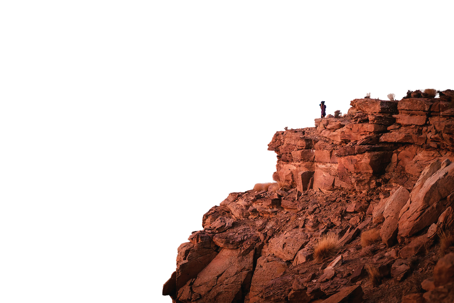
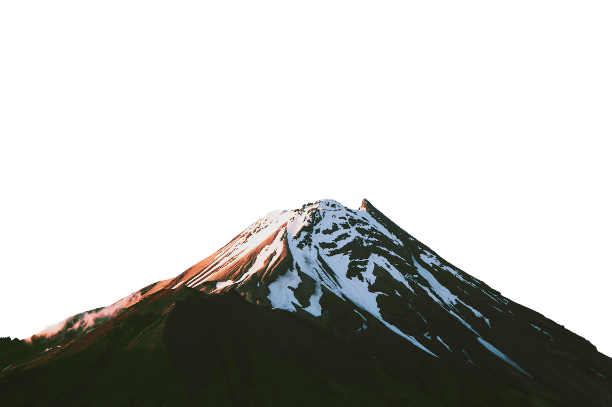
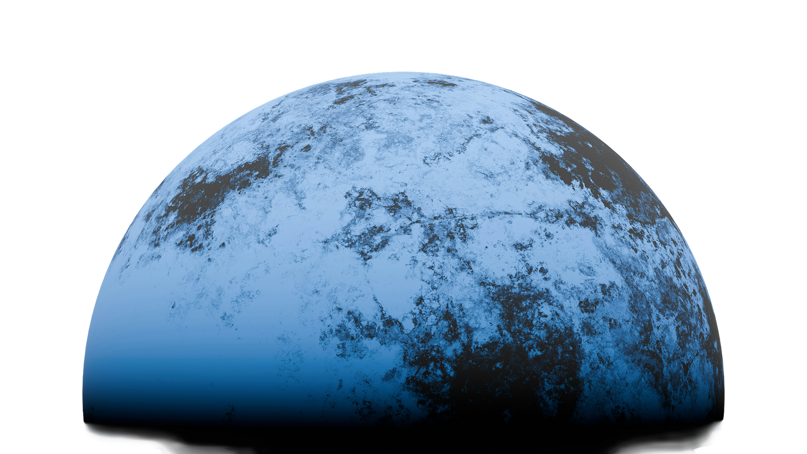

2025.03.14
에이프로세미콘, 전력 이어 RF용 GaN 에피웨이퍼 개발



who we are
뉴스
에이프로의 새로운 소식을 전해드립니다
2025.03.14
에이프로세미콘, 전력 이어 RF용 GaN 에피웨이퍼 개발

2025.02.20
에이프로, 중기부 R&D 우수성과

2025.01.31
산업 현장에 스며든 ‘점검 로봇’

2024.12.09
에이프로, 각형 배터리 양산 장비 수주…제품 라인업 확장